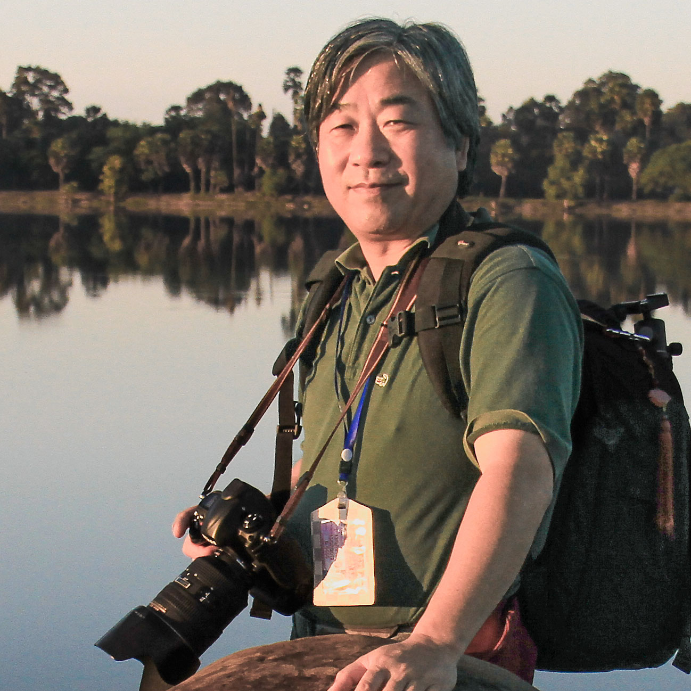
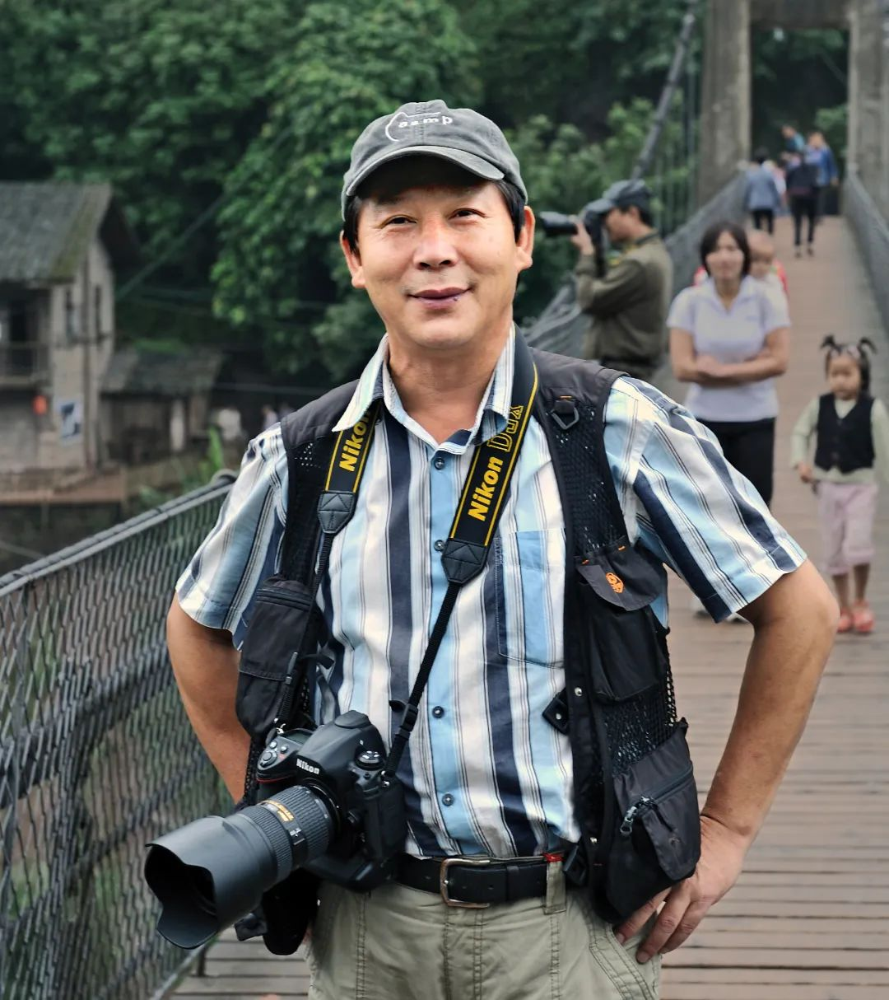
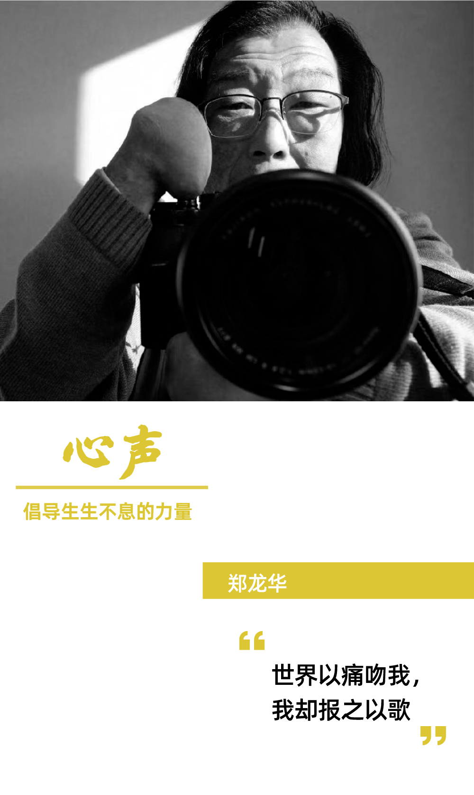

摄影家与他们的故事
"当结束回到起点时，我知道光明是真实的。"
用相机记录历史，在瞬间冻结历史，使瞬间永恒。 摄影从它出现的那一刻起就赋予了它记录的使命。 对于喜欢摄影的人来说，摄影的意义在于拍摄美丽的事物并与大家分享，从而让生活变得更好。

陈 海 汶
中 国他用相机打拼生活、创建上海老照相机制造博物馆、承办《上海摄影》杂志十年、收购海鸥照相机生产线、出版过无数摄影集、举办过多次摄影展，无论商业和艺术，他的每一步都走得很扎实，甚至每做一件事，都会给人带来一个意想不到的结果，即使当年蒙冤“在逃”的九个月当中，也不忘携带相机北上摄影。
- 179,968 人 气
- 2,277 喜欢
- 1,604 收 藏

Sebastio Salgado
巴 西他带着相机，走在北极冰河、雨林山棱，在直升机上，在难民营里，穿梭在原始部落之间。他看似冷静、低调、和蔼，但照片中却透露着哀伤、崇敬、信仰。
- 167,608 人 气
- 1,495 喜 欢
- 993 收 藏

厉 新 华
中 国金华市文化馆研究馆员，金华市摄影家协会名誉主席，中国摄影家协会德艺双馨优秀会员。
- 155,029 人 气
- 1,372 喜 欢
- 936 收 藏

吴 品 禾
中 国勤奋使吴品禾练就了一种特有的本领，就是善于从常人司空见惯的场景中发现不寻常，他在生活中时刻注意一些闪光点，揿下心灵的快门，用情感去摄影。
- 149,152 人 气
- 1,290 喜 欢
- 893 收 藏

Ashraful Arefi
孟 加 拉 国Ashraful 一直深受简单事物的启发，并试图通过他的作品来表达他对简单事物之美的欣赏。 简而言之，他致力于通过使用色彩和简单的技术在他的摄影框架内捕捉美感和情感。
- 140,726 人 气
- 1.099 喜 欢
- 822 收 藏

郑 龙 华
中 国浙江摄影家，无手摄影师郑龙华如何玩转相机这一精密仪器，世界以痛吻我，我却报之以歌，我用摄影俯瞰这个世界，爱这个世界。
- 134,602 人 气
- 1,127 喜 欢
- 901 收 藏
郑 培 书
新 加 坡一位摄影家除了有美感的敏锐度，也必是一个对生活怀抱热忱的人，唯有如此，才能在人生阅历中，汲取生命的养分。
- 126,882 人 气
- 835 喜 欢
- 751 收 藏
周 向 阳
中 国摄影的本性是纪实，本质上是摄影者的心灵借助镜头对世界的逼视与观察、审视与考量。
- 103,618 人 气
- 784 喜欢
- 637 收 藏